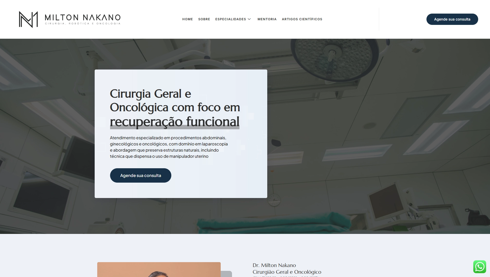
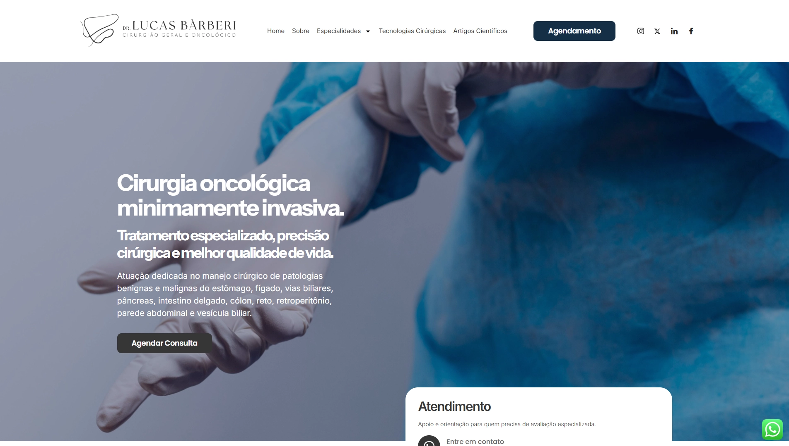
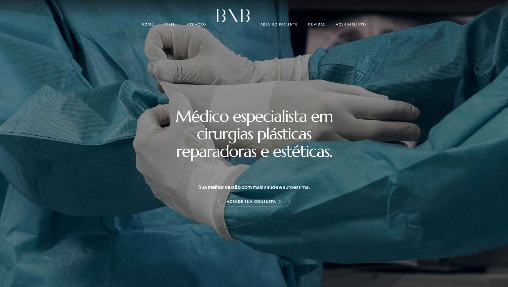
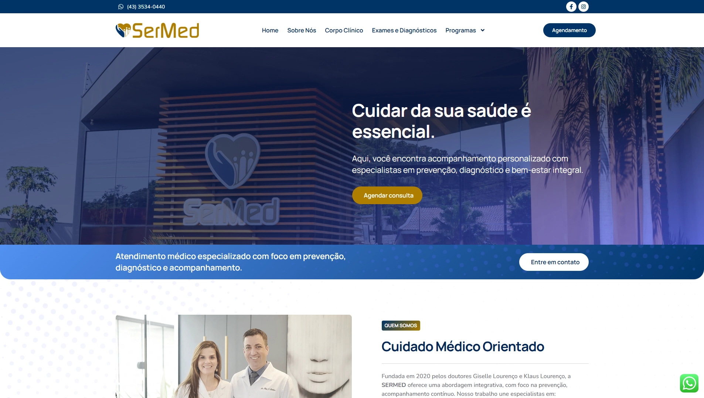
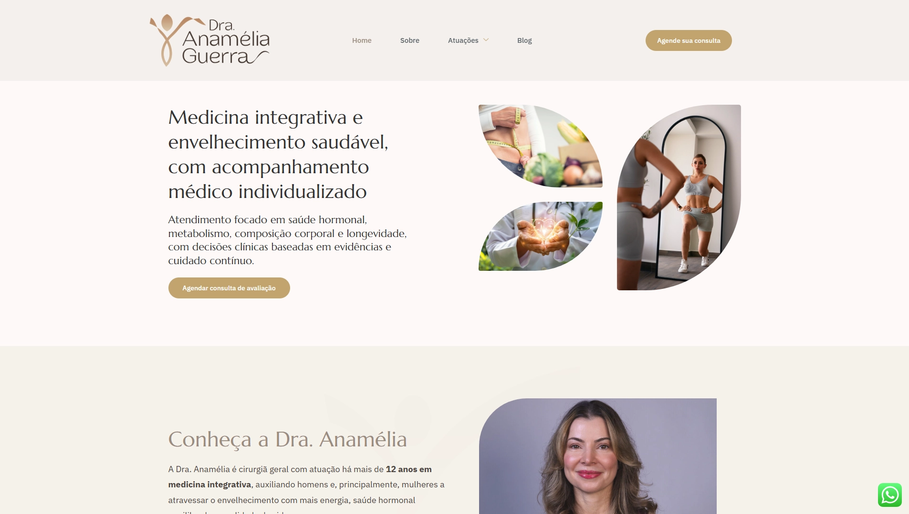
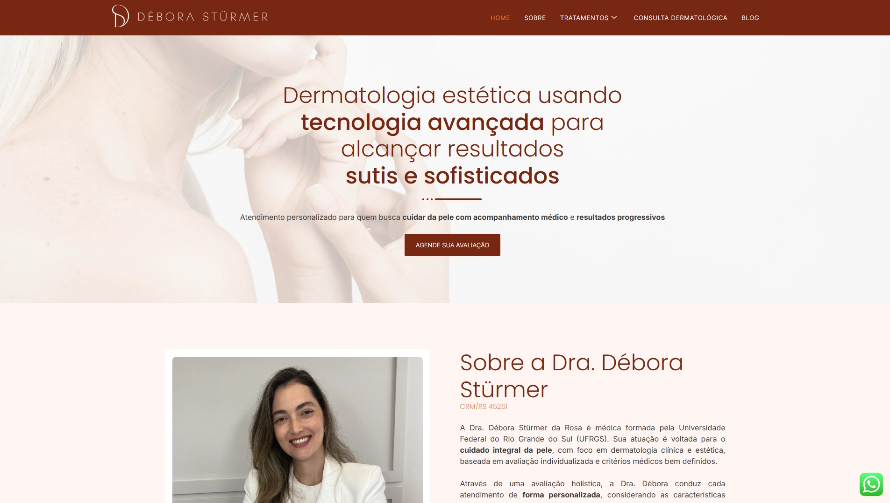
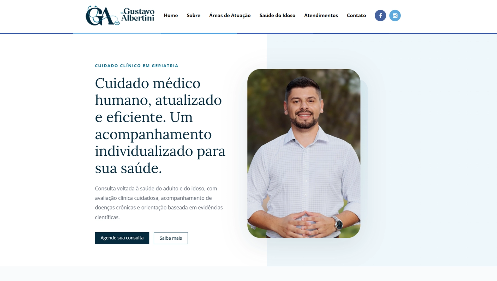

Site institucional
Dr. Milton Nakano
Site institucional para o Dr. Milton Nakano, voltado à apresentação dos serviços em cirurgia oncológica e à facilitação do contato com pacientes.
Ver siteSou designer gráfica formada em Artes pela Universidade Federal Fluminense, com formação em Webdesign pelo SENAC-RJ. Atualmente, curso pós-graduação em UI Design, ampliando minha atuação no desenvolvimento de interfaces digitais funcionais e visualmente estratégicas.
Designer gráfico, UI/UX, webdesigner e artista multimídia
Especialidade
Design gráfico para redes sociais e materiais impressos, além de sites desenvolvidos em HTML, CSS, JavaScript e WordPress.Portfólio

Site institucional para o Dr. Milton Nakano, voltado à apresentação dos serviços em cirurgia oncológica e à facilitação do contato com pacientes.
Ver site
Site institucional para o Dr. Lucas Bárberi, voltado à apresentação dos serviços em cirurgia oncológica e à facilitação do contato com pacientes.
Ver site
Site institucional para o Dr. Bernardo Nogueira, voltado à apresentação dos serviços e à facilitação do contato com pacientes.
Ver site
Site institucional para a clínica Sermed voltado à apresentação dos serviços multidisciplinares da clínica e à facilitação do contato com pacientes.
Ver site
Site institucional para a Dra. Anamelia Guerra voltado à apresentação dos serviços da Dra. e à facilitação do contato com pacientes.
Ver site
Site institucional para a Dra. Debóra Stürmer voltado à apresentação dos serviços da Dra. e à facilitação do contato com pacientes.
Ver site
Site institucional para o Dr. Gustavo Albertini voltado à apresentação dos serviços do Dr. e à facilitação do contato com pacientes.
Ver site